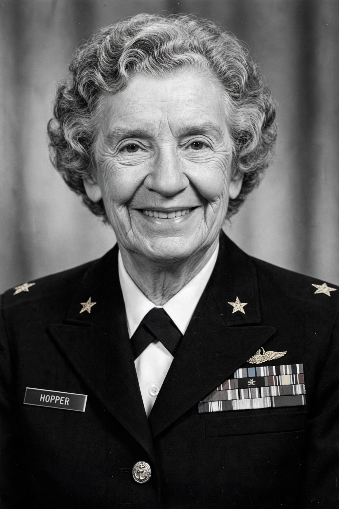

Grace Hopper

[Image: Grace Hopper in naval uniform, portrait photograph]
Grace Brewster Hopper (née Murray; 1906–1992) was an American computer scientist, mathematician, and US Navy rear admiral. One of the first programmers of the Harvard Mark I computer, she was a pioneer of computer programming who invented one of the first linkers and popularised the idea of machine-independent programming languages, leading to COBOL.
Hopper earned a PhD in mathematics from Yale in 1934 (one of few women of her generation to do so), taught at Vassar, and joined the Naval Reserve in 1943. At Harvard she worked under Howard Aiken on the Mark I; after the war she joined Eckert–Mauchly and Remington Rand, working on UNIVAC I.
Contributions and legend
Her A-0 system (1952) is often described as the first compiler (it was more precisely a linker/loader — Hopper herself spent years convincing the industry that programs could be written in English-like statements and compiled, embodied in FLOW-MATIC and then COBOL, 1959). She is credited — partly by her own cheerful retelling — with popularising the term 'debugging', after a moth was removed from the Harvard Mark II in 1947 and taped into the logbook; she noted the term predated the incident in engineering usage.
Forced to retire by age rules several times, she was repeatedly recalled, finally retiring in 1986 as the oldest commissioned officer in the Navy, aboard USS Constitution ceremonies. She became a celebrated lecturer, handing out 'nanoseconds' — pieces of wire about 30 cm long, the distance light travels in a nanosecond.
Honours
Hopper received the first Computer Science Man-of-the-Year award (1969), the National Medal of Technology (1991), and posthumously the Presidential Medal of Freedom (2016). The Grace Hopper Celebration of Women in Computing is named for her, as are a US Navy destroyer (USS Hopper) and Nvidia's Hopper GPU architecture (2022).